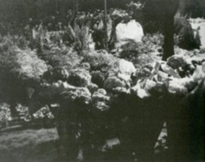

The Flower Market at Ile de la Cité
Place Louis Lepine, 4e


Guide du Paris Surréaliste, p.80
“you lean toward these flowers surrounded by shadow as if it were less to smell them than to abduct their secrets."
Surrealist Poet André Breton walked here with Nadja on a fall night [1920s],
and with Jacqueline Lamba one night in the spring of 1934.
“Is it finally you, this woman, did you just arrive today, between the meadows.
While, as if in a dream, there are always flower beds before us, you lean toward these flowers
surrounded by shadow as if it were less to smell them than to abduct their secrets—and such a gesture,
in itself, is the most moving response you could give to the question I do not ask you.”

Cité